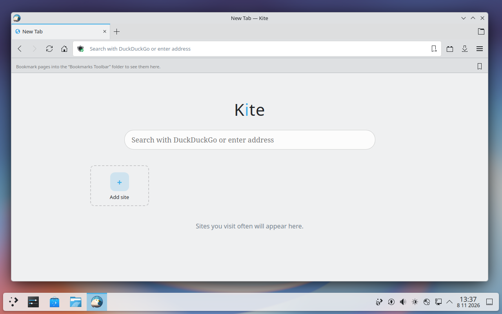
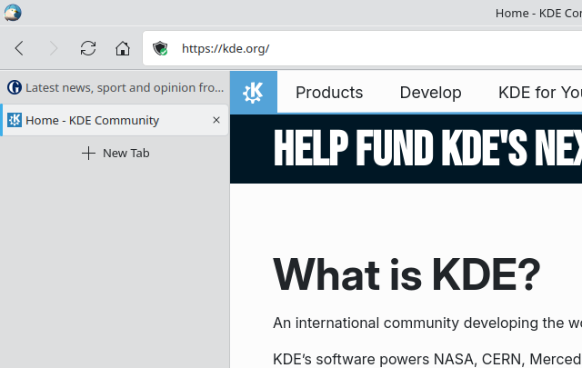
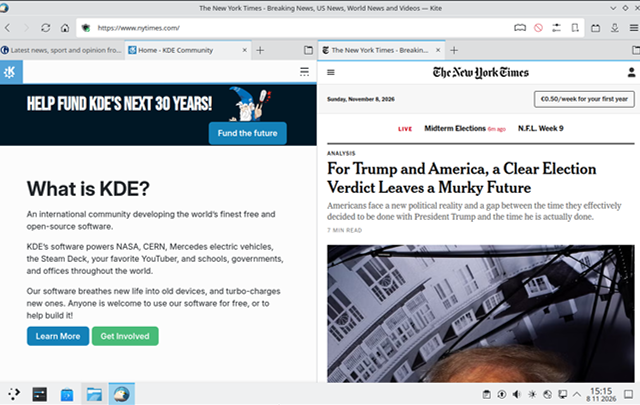
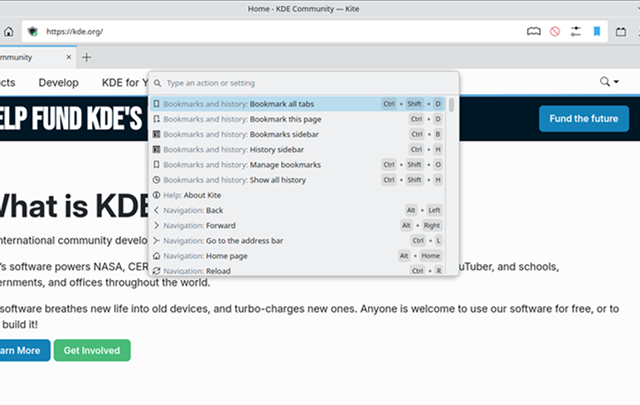

Kite
The browser for Plasma.

Screenshot missing: images/screenshots/startpage.pngWhy Kite
Privacy & content blocking
Your business is your business. Ads and trackers? Blocked. Fingerprinting? Scrambled. Want the real uBlock Origin? Chrome won't let you. Kite will.
Part of your Plasma desktop
Breeze. Your colours. Your icons. KDE Wallet. Media keys. KRunner. KDE Connect. Other browsers visit Plasma. Kite lives here.
Open source
Every line, out in the open. Read it, build it, change it, under the GPL-3.0-or-later. Written in Rust, because you deserve a browser that's built properly.
Take a closer look
Powerful plugin system
Mouse gestures? Plugin. Vim keys? Plugin. Your idea? Plugin. And if someone's already built it, it's probably waiting on addons.mozilla.org.
Tabs your way
Top. Bottom. Left. Right. Trees. Groups. Containers. Named sessions. Put your tabs wherever you want them. No add-ons, no CSS hacks, no permission slip.
Split view
Two pages. One window. Each side gets its own tabs, because that's how it should have worked all along.
For power users
Every action, one shortcut away. Every setting, one search away. Rebind any key, browse with Vim keys, give any site its own CSS, scripts or dark mode. Kite assumes you know what you're doing.



Screenshot missing: images/features/tabs-3.png

Screenshot missing: images/features/splitview.png
Screenshot missing: images/features/power.png'">See the difference
Same page. Different browser. Drag to see which one belongs on your desktop.
Want the details? We've got a whole table, including the parts where Kite loses.
Try Kite
One file. No root. No catch.